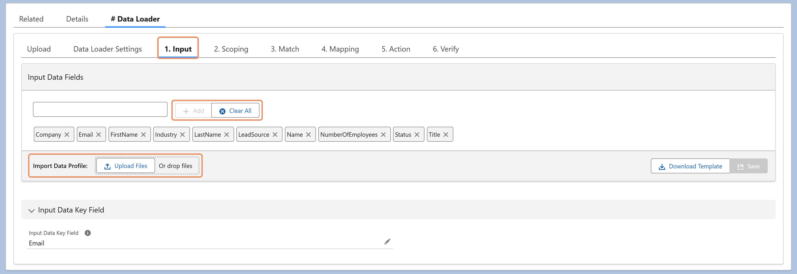

In #Data Loader, you can define an input data profile in three ways:
During creation: Upload a CSV template file when creating a new Data Loader Executable.
After creation: Go to the Input section of the Executable and upload a CSV template file.
Manual setup: In the Input section, add CSV columns manually and click Save to store the configuration.
